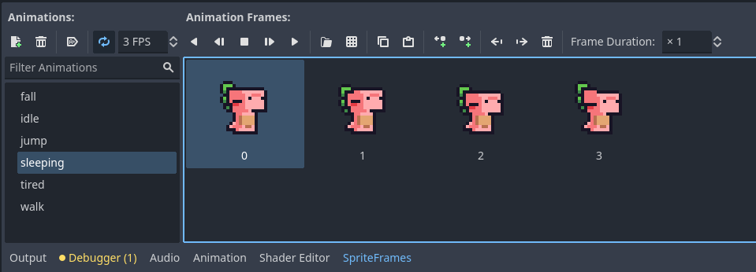

In many games, if a player doesn't do anything for long enough, their character will do alternate idle animations, such as yawning or even taking a nap. We can add such an animation to make the game feel more lively.
Before we can start adding the new animation, we need the new sprites! Go ahead and open up the Long Idle folder in your VGDC-2025 Assets folder, find the appropriate tired and sleeping files and drag it into your file system.
If you are not taking this course in person, you can download the assets Here
Now we need to add two new animations to our player's sprite frames. Navigate to your player scene's AnimatedSprite2D then it's sprite frame. Create a new animation called tired and import the tired file as its frames, then repeat for the sleeping animation.
Note that the animation speed for sleeping is 3 fps! I also set the tired animation speed to 4 so that the player gradually slows down as they get more sleepy.
Next we need to create a timer to keep track of how long the player has been idle. Navigate to the player scene tree and add a new node to our player node. Find the timer node, add it, and then rename it (I will name mine TiredTimer).
With the TiredTimer node selected, we can set the wait time to 30 (though you can set it shorter for testing) and one shot to true like so:
Finally, also in the inspector go to the Node tab and connect the TiredTimer's timeout signal to the player script.
Now we can finally add the functionality to our player script. First we need three variables: sleeping, tired and a reference to our TiredTimer node. The former two will be set to false by default:
# Reference Variables
var gravity = ProjectSettings.get_setting("physics/2d/default_gravity")
@onready var sprite = $AnimatedSprite2D
@onready var tired_timer = $TiredTimer
var tired = false
var sleeping = falseNext, we want to add functionality to our tired_timer_timeout function created by connecting the TiredTimer's signal. Specifically, we want the player to become tired if not tired yet, and sleeping if they are. We can do this like so:
func _on_tired_timer_timeout():
if tired:
sleeping = true
else:
tired = true
tired_timer.start()Finally, in the update_animations function, we will start the TiredTimer if the player is idle (aka not moving), and reset the sleeping and tired variables if the player begins to move. Additionally, we will check those variables and play the correct animation based on those states, as shown below:
func update_animations(input_axis):
# Tired/Sleeping
if velocity == Vector2.ZERO:
if tired_timer.is_stopped(): tired_timer.start()
else:
tired_timer.stop()
tired = false
sleeping = false
# Grounded Animations
if input_axis:
sprite.flip_h = input_axis < 0
sprite.play("walk")
else:
if not tired:
sprite.play("idle")
else:
await sprite.animation_looped
if sleeping:
sprite.play("sleeping")
else:
sprite.play("tired")
# Aerial Animations
if not is_on_floor():
if velocity.y <= 0:
sprite.play("jump")
else:
sprite.play("fall")And we are done! Go ahead and test out the new animations, then move on to another module!